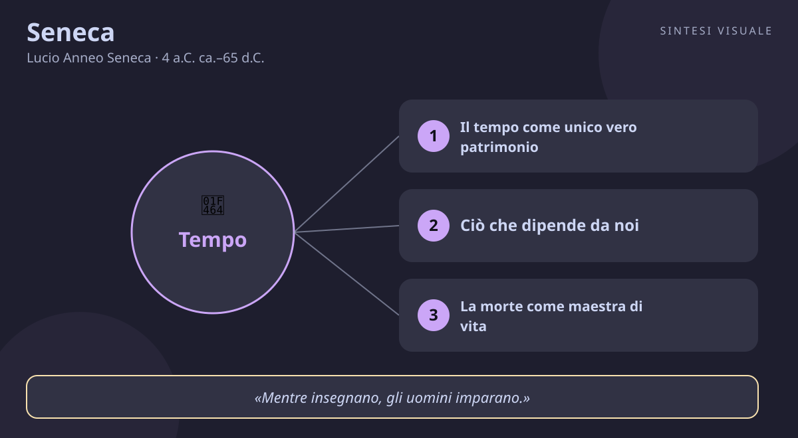

Seneca
Lucio Anneo Seneca · 4 a.C. ca.–65 d.C.
«Non abbiamo poco tempo, ma ne perdiamo molto»
- Tempo
- Stoicismo
- Morte
- Clemenza
💬La massima
«Non abbiamo poco tempo, ma ne perdiamo molto.»
— Seneca, De brevitate vitae (La brevità della vita), I, 1
In latino suona come una sentenza scolpita nel marmo: «non exiguum temporis habemus, sed multum perdidimus» — alla lettera, «non abbiamo poco tempo a disposizione, ma ne abbiamo distrutto molto». Nota il verbo: non «sprecato», ma distrutto, annientato. Seneca non ci sta consolando, ci sta accusando.
Spiegazione. Il saggio, dedicato all'amico Paolino, si apre con la lamentela più antica del mondo: la vita è breve, la natura avara, il tempo ci sfugge. Seneca rovescia tutto: la vita è lunga abbastanza — satis longa vita — per compiere anche le più grandi imprese, se la sappiamo amministrare bene. Il problema non è la quantità di giorni che ci vengono dati, ma la qualità dell'uso che ne facciamo. Ore svendute alle chiacchiere, anni regalati all'ambizione altrui, giornate intere passate ad aspettare il fine settimana: è così che, senza accorgercene, demoliamo il nostro capitale di tempo, «come se fosse inesauribile mentre è l'unica cosa che non si restituisce».
Perché è rivoluzionaria. Duemila anni prima dei manuali di gestione del tempo, Seneca aveva già capito il punto: il tempo è l'unico bene che possediamo davvero, eppure è l'unico che trattiamo come se non valesse niente. Custodiamo gelosamente soldi e proprietà, ma lasciamo che chiunque — un seccatore, una notifica, una riunione inutile — ci rubi le ore. La massima non invita all'ansia da prestazione, ma a un «inventario» onesto: guarda dove sono finite le tue giornate, e scoprirai che la vita breve è quasi sempre una vita sprecata.
👤Biografia
Lucio Anneo Seneca nacque a Cordova, nella Spagna romana, intorno al 4 a.C., secondogenito di una ricca famiglia equestre: il padre, Seneca il Vecchio, era un celebre maestro di retorica; la madre Elvia, donna colta e forte, gli resterà legatissima. Portato ancora bambino a Roma, studiò eloquenza per diventare avvocato e senatore, ma da giovane si appassionò alla filosofia con maestri come Sozione, Attalo e Fabiano, sfiorando persino la setta dei Sestii, l'unica scuola filosofica nata a Roma.
L'esilio e il potere. Senatore sotto Claudio, nel 41 d.C. fu travolto da un'intrigo di corte — accusato di adulterio con Giulia Livilla, sorella dell'imperatore — e mandato in esilio in Corsica, dove restò otto anni tra malinconia e studio. Richiamato a Roma nel 49 per volere di Agrippina, divenne precettore del giovane Nerone e poi, con il prefetto Burro, di fatto il reggente dell'impero nei primi anni del regno: ricchezze immense, ville, influenza. Quando Nerone scivolò nella tirannia, Seneca provò a frenarlo e poi a ritirarsi in disparte, dedicandosi a scrivere le sue opere più belle.
La morte da saggio. Nel 65 d.C., dopo la congiura dei Pisoni contro Nerone, l'imperatore gli ordinò il suicidio pur senza prove certe contro di lui. Seneca obbedì con calma stoica: come racconta Tacito negli Annali, si tagliò le vene, consolò gli amici piangenti invece di farsi consolare, bevve la cicuta come un nuovo Socrate e dettò fino all'ultimo le sue riflessioni. Aveva circa sessantanove anni.
Il carattere. Brillante, ironico, rettore di corte ma moralista severo con se stesso; il primo a confessare la distanza tra i propri princìpi e la propria vita — e proprio per questo umanissimo. Scriveva di notte, dettava camminando, rispondeva a chiunque gli chiedesse consiglio: un filosofo mondano che non si vergognava delle proprie contraddizioni.
📌Sintesi del pensiero
Lo stoicismo romano di Seneca insegna a usare la ragione per distinguere ciò che dipende da noi da ciò che non ne dipende, e a vivere il presente con pienezza invece di sprecarlo in affanni inutili.
- Tempo: la vita è lunga se la usi bene; ogni giorno va vissuto come se fosse l'ultimo e insieme come se fosse eterno.
- Virtù: l'unico bene è l'animo retto; ricchezza e potere sono «indifferenti», da usare senza diventarne schiavi.
- Provvidenza e prove: le sventure sono la palestra dell'animo forte — il saggio non le cerca, ma non le fugge.
- Umanità: siamo tutti membra di un unico corpo; lo schiavo è un uomo come noi, la clemenza è la virtù dei potenti.
🏛️I temi fondamentali
- Il tempo come unico vero patrimonio. Per Seneca il tempo è l'unico bene che non si può comprare né restituire: «non riceviamo una vita breve, ce la rendiamo tale». L'esempio concreto: tieni per una settimana un diario delle ore, come un libro contabile — scoprirai che le «piccole» distrazioni quotidiane valgono mesi all'anno. L'avaro conta le monete; il saggio conta i giorni.
- Ciò che dipende da noi. Dagli stoici greci eredita la distinzione fondamentale: opinioni, desideri, giudizi dipendono da noi; corpo, ricchezze, fama no. Esempio concreto: non puoi decidere se pioverà il giorno del tuo matrimonio all'aperto, ma puoi decidere se rovinarti la festa per la pioggia o ballare lo stesso. La serenità nasce da questa cernita, non dal controllo del mondo.
- La morte come maestra di vita. Meditare mortem — pensare ogni giorno alla morte — non è macabro: è il trucco per smascherare le false urgenze. Esempio concreto: chiediti «se questo fosse l'ultimo mese, accetterei questo straordinario non pagato?» e d'un tratto le priorità si riordinano da sole. Chi ha fatto amicizia con l'idea della fine smette di rimandare l'essenziale.
- La clemenza del potente. Nel De clementia, scritto per il giovane Nerone, sostiene che il sovrano è come l'anima nel corpo: tanto più grande quanto più perdona. Esempio concreto: il capo che di fronte a un errore del collaboratore chiede «come lo ripariamo?» invece di «di chi è la colpa?» ottiene lealtà, non paura — e un team che non ha paura di segnalare i problemi.
- La fratellanza umana. Nelle Lettere a Lucilio scrive che lo schiavo è «un uomo» (homo) come il padrone e va trattato con umanità: un'affermazione inaudita in una società schiavista. Esempio concreto: per Seneca, chi umilia il cameriere o l'inserviente non mostra superiorità ma rivela la propria bassezza — la dignità non sta nel ruolo, ma nel comportamento.
📚Le opere principali
- De brevitate vitae (La brevità della vita, ~49-55 d.C.). Un dialogo-saggio dedicato a Paolino: la vita non è breve, siamo noi a renderla tale sprecandola. Tesi centrale: vivi come se il tempo fosse denaro — anzi, più prezioso del denaro. Da leggere per prima: è breve, fulminante, attualissima.
- Lettere morali a Lucilio (62-65 d.C., 124 lettere). Il suo capolavoro: un carteggio con l'amico Lucilio che è in realtà un corso completo di filosofia pratica — tempo, morte, amicizia, ricchezza, vecchiaia. La forma epistolare le rende perfette da leggere una al giorno, come una palestra quotidiana dell'animo.
- De ira (L'ira, ~41-44 d.C.). Tre libri sulla passione più distruttiva: l'ira è una follia temporanea che si può prevenire con l'esame di coscienza serale. Tesi centrale: non esistono «giuste» arrabbiature che non si paghino a caro prezzo. Utile a chiunque abbia mai mandato un messaggio di cui si è pentito.
- Le tragedie (Medea, Fedra, Tieste e altre). Nove tragedie in versi che mettono in scena passioni sfrenate — vendetta, gelosia, ambizione — come monito vivente: ecco cosa succede all'animo che non si governa. Hanno nutrito il teatro europeo per secoli, dal Rinascimento fino a Shakespeare.
💬Massime celebri
«Il destino guida chi acconsente, trascina chi resiste.» — Lettere morali a Lucilio, 107, 11 (ducunt volentem fata, nolentem trahunt, traducendo il poeta stoico Cleante): accettare ciò che non puoi cambiare non è rassegnazione, è l'unico modo per restare liberi dentro la necessità.
«Se vuoi essere amato, ama.» — Lettere morali a Lucilio, 9, 6 (si vis amari, ama): l'affetto non si pretende né si compra, si genera. Tre parole che riassumono ogni manuale di relazioni.
«Mentre insegnano, gli uomini imparano.» — Lettere morali a Lucilio, 7, 8 (homines dum docent discunt): spiegare un'idea a un altro è il modo più sicuro per capirla davvero — lo sa ogni studente che ha ripassato interrogando un compagno.
⌛Contesto storico
- Seneca nacque a Cordova intorno al 4 a.C. e crebbe a Roma: il mondo in cui visse fu quello del primo impero romano, la potenza che dominava tutto il Mediterraneo.
- Era l'età della dinastia giulio-claudia. Dopo Augusto — morto nel 14 d.C., quando Seneca era ragazzo — si succedettero Tiberio, Caligola, Claudio e Nerone: il passaggio dalla repubblica ormai defunta al principato, un potere personale concentrato nelle mani di un solo uomo e della sua corte. Il Senato esisteva ancora, ma contava sempre meno; a decidere destini e carriere erano l'imperatore, i liberti imperiali, le mogli e i prefetti.
- Intorno a lui, la Pax Romana: legioni ai confini, strade e acquedotti, un commercio che andava dalla Britannia all'Egitto. Roma superava il milione di abitanti — la più grande metropoli del mondo antico — con palazzi e ville sfarzose da un lato, insulae sovraffollate e miseria dall'altro. La società era una piramide rigida: senatori e cavalieri in alto, plebe urbana mantenuta con grano e giochi, milioni di schiavi alla base, considerati oggetti con voce.
- La vita di corte era un campo minato: delatori professionisti, processi politici, condanne a morte decretate con un cenno. Seneca conobbe tutto questo da dentro — l'esilio in Corsica, le ricchezze sotto Nerone, il terrore degli ultimi anni — e la sua filosofia è anche una tecnica di sopravvivenza interiore in un mondo dove la fortuna poteva rovesciarsi in un giorno.
- Sul piano culturale, Roma importava la filosofia dalla Grecia e la rendeva pratica: lo stoicismo di Zenone e Crisippo, passato per Panezio e Posidonio, diventava con Seneca una guida per vivere — meno teoria, più esercizi quotidiani. Intanto nelle province orientali nascevano e si diffondevano nuovi culti, tra cui il cristianesimo, che di lì a poco avrebbe incontrato proprio lo stoicismo romano.
- Da chi è stato influenzato gli stoici greci — Zenone di Cizio il fondatore, Crisippo il sistematore, Cleante il poeta della preghiera cosmica — e i mediatori Panezio e Posidonio; i maestri romani Sozione, Attalo e Fabiano; la scuola dei Sestii, con la pratica quotidiana dell'esame di coscienza serale; l'epicureismo stesso, che cita e ammira quando parla di amicizia e di frugalità.
- A chi ha trasmesso lo stoicismo imperiale — Epitteto lo cita e lo sviluppa, Marco Aurelio lo porta sul trono nei suoi Colloqui con se stesso; i Padri della Chiesa, tanto che circolò persino un falso carteggio tra Seneca e san Paolo e Lattanzio lo chiamò quasi cristiano; e da lì tutta la tradizione occidentale fino ai giorni nostri.
🌊L'eredità
- Dopo la morte, Seneca divenne il filosofo più letto di Roma: Epitteto, lo schiavo affrancato maestro di stoicismo, discute le sue tesi con gli allievi, e l'imperatore Marco Aurelio ne fa pane quotidiano nelle sue meditazioni notturne in tenda, tra una campagna e l'altra sul Danubio. La sua morte «socratica» narrata da Tacito ne fece il modello del saggio che resta libero anche davanti al tiranno.
- I cristiani lo adottarono quasi come uno dei loro: Tertulliano lo disse «spesso nostro», e nel Medioevo si diffuse un carteggio apocrifo con san Paolo che lo rese una autorità morale nelle scuole e nei monasteri. Dante lo colloca nel Limbo tra i grandi spiriti dell'antichità.
- Con l'Umanesimo e il Rinascimento, Seneca esplode di nuovo: Montaigne lo cita più di ogni altro nei suoi Saggi, trasformando le Lettere a Lucilio nel modello del filosofare personale; Giusto Lipsio ne fa il centro del neostoicismo, la filosofia dei funzionari e dei soldati d'Europa; le sue tragedie, riscoperte e rappresentate, insegnano ai drammaturghi moderni — da Garnier a Corneille, fino a Shakespeare — come mettere in scena la passione.
- Nell'età moderna, Pascal e gli illuministi discutono con lui, Schopenhauer lo ammira, e nel Novecento la psicoterapia cognitiva — da Albert Ellis a Aaron Beck — riconosce nelle sue tecniche (distinguere fatti e giudizi, l'esame serale, la premeditazione dei mali) gli antenati diretti delle proprie: lo stoicismo senecano è oggi il cuore filosofico di ogni manuale di resilienza e gestione del tempo.
🌍Esempi di oggi
Tre situazioni dove Seneca fa la differenza:
- La domenica sera divorata dallo scorrimento infinito. Due ore passate a far scorrere video brevi senza nemmeno ricordare cosa hai visto: Seneca le chiamerebbe tempo distrutto, non riposo. Il vero riposo — una passeggiata, un libro, una cena senza telefono — ricarica; lo scorrimento passivo lascia solo stanchezza e la sensazione che il weekend «non sia bastato». La vita non è stata breve, quella domenica: è stata demolita.
- La riunione che poteva essere un messaggio. Un'ora in cinque persone per decidere ciò che un messaggio di tre righe avrebbe risolto: Seneca direbbe che non solo hai perso la tua ora, ma hai rubato un'ora ad altri quattro esseri umani. Chiedere «serve davvero la mia presenza?» o proporre un resoconto scritto non è maleducazione: è rispetto del patrimonio comune più prezioso, il tempo altrui.
- Il rimpianto del genitore sempre di corsa. Anni rincorsi tra straordinari e scadenze, con la promessa «quando avrò sistemato tutto, starò con i miei figli»: poi un giorno i figli sono grandi e quel «tutto» non si è mai sistemato. Seneca, che dedicò pagine taglienti agli affaccendati (occupati) che lavorano per vivere ma non vivono mai, suggerirebbe l'inventario più semplice: questa settimana, quante ore ai miei figli e quante alle e-mail? I numeri non mentono — e non tornano indietro.
📄Seneca (4 a.C. ca.–65 d.C.), il maestro che ci insegnò a non sprecare la vita
Ritratto (erma romana doppia di Socrate e Seneca con iscrizione antica, copia del III secolo da originale del I secolo, Neues Museum di Berlino — pubblico dominio):
🧠Quiz
Rispondi in chat con la lettera di ogni risposta, es. 1B 2A 3C 4D 5B.
1 Cosa significa la massima «non abbiamo poco tempo, ma ne perdiamo molto» (De brevitate vitae, I, 1)?
2 A quale scuola filosofica apparteneva Seneca, e chi lo aveva preceduto su quella strada?
3 Perché Seneca fu mandato in esilio in Corsica nel 41 d.C., e da chi fu poi richiamato?
4 Secondo il racconto di Tacito, come morì Seneca nel 65 d.C.?
5 Quale di queste frasi è davvero di Seneca, e da dove viene?
✅Soluzioni — tocca per vedere
- B) La vita è abbastanza lunga per grandi imprese, se ben amministrata. Il latino dice satis longa vita: la vita è lunga a sufficienza «se tutta ben impiegata». Non è la natura ad averci dato poco, siamo noi a disperdere il capitale in chiacchiere, ambizioni altrui e attese vuote.
- B) Lo stoicismo. Seneca è il grande volto romano dello stoicismo fondato da Zenone di Cizio e sistemato da Crisippo, mediato a Roma da Panezio, Posidonio e dai suoi maestri Sozione, Attalo e Fabiano. L'epicureismo lo cita con rispetto, ma la sua casa è la Stoà.
- C) Accusato di adulterio con Giulia Livilla; richiamato da Agrippina. Sotto Claudio un intrigo di corte lo mandò in Corsica per otto anni; Agrippina lo fece tornare per affidargli l'educazione del figlio Nerone — la mossa che lo portò al vertice del potere e poi alla rovina.
- B) Suicidio ordinato con calma stoica. Dopo la congiura dei Pisoni, Nerone gli ordinò di uccidersi: Seneca si tagliò le vene, consolò gli amici in lacrime, bevve la cicuta come Socrate e continuò a dettare — la scena che Tacito racconta negli Annali (XV) come modello del saggio libero davanti al tiranno.
- A) «Se vuoi essere amato, ama» — Lettere morali a Lucilio, 9, 6. Le altre sono trappole: «penso, dunque sono» è di Cartesio, «l'uomo è misura» di Protagora, «sapere aude» è il motto kantiano dell'Illuminismo (da Orazio). Diffida sempre delle frasi senza opera e numero: Seneca si cita con il riferimento preciso.
🔁Ripasso
Tempo breve ≠ vita breve. Seneca non dice che viviamo pochi anni in assoluto, ma che ne distruggiamo buona parte: il verbo latino perdere qui vale «mandare in rovina». La correzione non è vivere di corsa, ma vivere con intenzione — amministrare le ore come un patrimonio.
Stoicismo ≠ insensibilità. Il saggio senecano prova dolore, paura e affetto come tutti: la differenza è che non aggiunge al fatto il giudizio che lo avvelena («è un disastro ingiusto»). Accettare il destino (ducunt volentem fata) significa collaborare con la necessità, non subirla piangendo né fingere di non sentire niente.
Precettore di Nerone ≠ complice di Nerone. Seneca educò e guidò il giovane imperatore negli anni buoni del regno, poi tentò di frenarlo e si ritirò; quando Nerone divenne tiranno, fu lui a condannare il maestro. Giudicarlo «corrotto dal potere» dimentica il tentativo — e il prezzo pagato.
Domani un nuovo filosofo. Se rispondi al quiz, ti darò il punteggio e un ripasso mirato solo su ciò che hai sbagliato.
🖼️In un colpo d’occhio

Tocca l’immagine per ingrandirla.